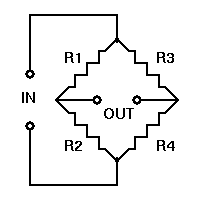
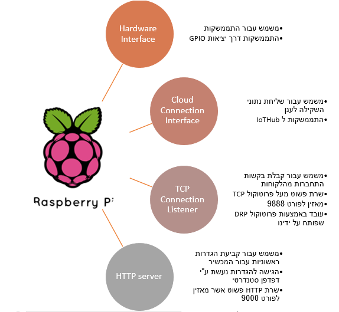

רון אלטבוים 039563838 ron018@gmail.com
רמי לרנר 038053294 ramylern@mail.tau.ac.il
המוצר ושימושיו
Weight Track הוא משקל דיגיטלי חכם ושם האפליקציה הסלולרית הנלווית אליו. בכל פעם שהמשתמש עולה להשקל, נתוני השקילה נשמרים בבסיס נתונים בענן. האפליקציה מספקת ממשק נוח ואינטראקטיבי המאפשר למשתמש לקבל לא רק את תוצאת השקילה אלא גם סטטיסטיקות נוספות הקשורות בשקילות קודמות ותצוגות מתקדמות באמצעות גרפים. המכשיר מיועד בעיקר לשימוש ביתי. הוא מועיל במיוחד לספורטאים, שומרי משקל, מטופלים תחת מעקב רפואי או לכל החפץ לנהל מעקב מדוייק אחר השינויים במשקלו. בנוסף מתאים המכשיר גם לשימושים עסקיים וציבוריים כמו חדרי כושר, קופות חולים, קניונים, מסלולי הליכה עירוניים וכו'.
Weight Track מצוייד במכשיר Raspberry Pie (להלן RPI). בשימוש הראשון יש להתקין את ה-RPI. לאחר מכן ניתן להתחיל להשקל. לפני כל שקילה יש לסרוק באמצעות האפליקציה את קוד ה-QR המצורף למכשיר ה-Weight Track ולאחר מכן לעלות על המשקל ולהשקל כרגיל.
סרטון הדגמה
הסרטון לא עובד? לחץ כאן
חומרה
-
Raspberry Pie 2

-
SparkFun Load Cell Amplifier - HX711

-
SparkFun Load Sensor Combinator

-
משקל דיגיטלי ביתי
הרכבת החומרה
לקחנו משקל דיגיטלי ביתי ונתקנו ממנו את המעגל החשמלי שלו. במשקל ישנם ארבעה חיישני משקל מסוג Load Cell, ולכל אחד מהם שלושה חוטים (אדום, שחור, לבן) המחוברים למעגל החשמלי. להלן תרשים של החיישן:

מכיוון שלא קיימת סטנדרטיזציה לצבע החוטים, השתמשנו במולטימטר על מנת למדוד את ההתנגדות בין כל זוג חוטים. היה עלינו למצוא את הזוג בעל ההתנגדות הגבוהה ביותר. במשקל שלנו ההתנגדות הגבוהה ביותר נמצאה בין החוט הלבן לשחור. נעזרנו במנחה הסדנה על מנת להלחים את החוטים אל ה-Combinator באופן הבא: החוטים השחורים למינוס (-), הלבנים לפלוס (+) והאדומים למרכז (C):

אחת הדרכים לקחת שינויי התנגדות קטנים ולהופכם למשהו מדיד היא שימוש ב- Wheatstone bridge . זוהי תצורה של ארבעה נגדים ומתח קבוע מראש, כמתואר בתרשים:
ה-Combinator מחבר יחדיו את ארבעת החיישנים באופן כזה ששני נגדים בתצורת ה-wheatstone bridge הינם קבועים, והשניים האחרים משתנים.
לאחר הלחמת תריסר החוטים אל ה-Combinator חברנו אותו אל הלוח של מגבר ה-HX711 דרך ארבעת החוטים הסטנדרטיים של Load Cell.
לבסוף חיברנו את ה-RPI למגבר דרך יציאות GPIO.
Raspberry Pie
התוכנית אשר רצה על ה-Raspberry Pie
התוכנית אשר רצה על ה-RPI בנויה בטכנולוגית Windows Universal Platform ונבנתה באמצעות Visual Studio 2017.
התוכנית בנויה במבנה הדומה במידה רבה לשרת אינטרנט, כלומר התוכנית מאזינה באופן קבוע לבקשות התחברות מצד הלקוחות. כאשר מתקבלת בקשה, התוכנית מספקת את שירותה, שולחת חיווי ללקוח ואז סוגרת את החיבור.
התוכנית ממשת ארבע פונקציות עיקריות כממפורט להלן:
התממשקות לחומרה
קריאת הנתונים מהסנסור נעשית על ידי מחלקה שכתבתנו בשפת C# ושמה LinearHX. זהו למעשה תרגום שביצענו עבור מחלקה שנכתבה עבור אנדרואיד בשפת C++: לעיון בקוד לחץ כאן.
מעבר לתרגום הקוד הנ"ל כך שיתאים ל-RPI, הוספנו בו מספר פונקציות אשר מממשות את תהליך הכיול של המשקל בצורה קלה ונוחה יותר לשימוש עבור הצרכים שלנו.
כמו כן כתבנו מחלקה נוספת בשם UserHardwareLinker אשר יורשת מ-LinearHX ומוסיפה לה פונקציות נוספות המאפשרות מעקב אחר המשתמשים, ויכולת זיהוי בכל עת האם המשקל נמצא בשימוש, ולהחזיר את פרטי המשתמשים אשר משתמשים במשקל.
משך השקילה עורך כ-5 שניות. במהלכה הסנסור מבצע את השקילה מספר רב של פעמים (כאלף פעמים) ומחזיר את ממוצע השקילות שבוצעו. באופן זה אנו ממזערים את אי-דיוקים של הסנסור.
התחברות לענן Microsoft Azure –
ההתחברות לענן נעשית בעזרת IoT Hub. רכיב זה נמצא בענן ומאזין להודעות אשר אשר נשלחות מהתוכנית אל הענן.
התוכנית שולחת הודעה לענן בשתי סיטואציות:
- רישום המכשיר לענן, או עדכון כתובתו
- שליחת הנתונים שהתקבלו ממד-המשקל יחד עם של המשתמש אשר ביצע את השקילה ותאריך השקילה
האזנה לבקשות התחברות
כאשר משתמש רוצה לבצע שקילה עליו להודיע לתוכנית כי ברצונו להישקל. כאשר התוכנית מקבלת את ההודעה, היא יכולה לפנות לממשק ה-uhl לשם קבלת הנתונים מהסנסור.
שליחת ההודעות נעשית באמצעות פרוטוקול אשר פותח על ידנו בשם Data Request Protocol (או בראשי-תיבות DRP). DRP הינו פרוטוקול תקשורת אשר יושב מעל פרוטוקול TCP הסטנדרטי. יצירת החיבור בין האפליקציה אצל הלקוח ומכשיר ה-RPI ממושת באמצעות Socket. התוכנית מקימה שרת בסיסי אשר מאזין להודעות DRP ומשרת אותן. לחץ כאן להסבר מפורט על הפרוטוקול.
תחזוקת הגדרות בסיסיות, ואספקת ממשק נוח המאפשר גישה להגדרות אלו
על הלקוח לספק למכשיר מספר הגדרות ראשונית בסיסיות, כלומר הגדרות שיש להגדירן באופן חד פעמי לפני השימוש במכשיר פעם הראשונה. אי-לכך יצרנו ממשק נוח המפאשר למשתמש גישה להגדרות המכשיר ולשינויים. ההגדרות נשמרות על כרטיס ה-SSD של ה-RPI, ולכן אינן משתנות גם לאחר כיבוי והפעלה מחדש של המכשיר.
הנתונים שנשמרים הינם:
- שם מד-המשקל (ניתנת למשתמש האפשרות לתת למכשיר שברשותו שם אשר יוצג למשתמשים הנשקלים. זה יכול להיות נוח עבור משתמשים עסקיים)
- המספר הסידורי של המשקל
- כתובת ה-IP של המשקל כפי שנצפתה לאחרונה
- נתוני הכיול של המשקל*
הגישה לנתונים אלו נעשית באמצעות ממשק WEB ולכן יכולה להתבצע מכל דפדפן סטנדרטי. המכשיר מתחזק שרת HTTP פשוט אשר מאזין לפורט 9000, ושולח את דף ההגדרות לכל לקוח אשר מנסה לגשת להגדרות המכשיר. הגישה להגדרות מתבצעת ע"י הזנת כתובת ה IP של המכשיר והפורט 9000 בשורת הכתובת של הדפדפן בעודו רץ ו"לגלוש" לדף שבו ניתן לכוון את הגדרות אלו.
*המשקל מתבצע על ידי שקילת שני עצמים שמשקלם ידוע מראש, ואחד מעצמים אלה הוא בעל משקל 0 (כלומר שאין דבר על המשקל). על המתקין לספק את משקלו של עצם כלשהו ולאחר מכן לבצע שתי שקילות. המערכת תעבד את נתוני השקילות ותשמור את הערכים המתאימים למשכל המכויל
האפליקציה
בפרוייקט זה הפכנו משקל-אמבטיה רגיל למשקל המחובר לאינטרנט. שקילות המשתמש מאוחסנות בענן של Azure בתוך מסד נתונים אשר יושב על שרת SQL. זה מאפשר למשתמש לעקוב אחר הסטוריית השקילות שלו מכל מכשיר Weight Track.
לשימוש בבית. כל שעל המשתמש לעשות הוא להוריד את אפליקציית Weight Track לאנדרואיד, מה שיאפשר לו להשתמש בכל מכשיר Weight Track שירצה!
מעבר הנתונים:

האפליקציה הינה אפליקציית Xamarin.Android אשר משתמשת בשירותי Azure כגון מסד נתונים SQL, IoTHub, StreamAnalytics ואימות באמצעות הפייסבוק. צד השרת הוא קוד javascript ומנוהל על ידי Azure. כתובת ה-URL של צד השרת:
http://iotweight.azurewebsites.netצד הלקוח הוא תוכנית Xamarin.Android (C#)
פרופיל משתמש
התחברות המשתמש לאפליקציה נעשית דרך הפייסבוק. בפעם הראשונה בה המשתמש מתחבר לאפליקציה, מוצג לפניו מסך התחברות דרך הפייסבוק, ועליו להזין את כתובת הדואר האלקטרוני והסיסמה איתם הוא רשום לפייסבוק. אז נוצר לו מספר זהות ייחודי ע"י ה-Azure המבוסס על כתובת המייל שהזין. מספר הזהות הזה מתאחסן במסד מידע SQL שבענן, ומשמש לזיהוי ייחודי של המשתמש. על ידי ביצוע תהליך האימות דרך פייסבוק אנו נמנעים מלאחסן כתובות דואר אלקטרוני וסיסמאות במסד המידע שלנו. לכן המימוש הזה בטוח יותר מזה האלטרנטיבי (כפי שמוסבר בספר המקוון הזה שנכתב בידי מפתח מייקרוסופט.)
המשתמש יכול להוסיף להוסיף לפרופיל שלו גם נתון גובה, ואז יוכל להשתמש במחשבון ה-BMI שבאפליקציה (הסבר מפורט בהמשך).
הפרופילים של המשתמשים מאוחסנים בטבלת SQL הנקראת UsersTable, המכילה את השדות הבאים:
string UniqueUsername- זהו מספר הזהות הייחודיfloat height- אופציונאלי
מהלך השקילה
כאשר המשתמש רוצה לשקול את עצמו הוא לוחץ על כפתור Start Weight. לאחר מכן עליו לסרוק את הברקוד המצורף ל-RPI. לאחר שהאפליקציה סרקה את הברקוד, היא שולחת שאילתה לטבלת ה-SQL שבענן הנקראת RaspberryTable. בטבלה מצויים השדות הבאים:
string QRCode- הברקוד שעל ה-RPIstring IPAddress- כתובת ה-IP של ה-RPI
השאילתה מחזירה את כתובת ה-IP של ה-RPI (התוכנית שרצה על ה-RPI כבר העלתה את המידע הזה לטבלה ודואגת שישאר עדכני).
כעת, אפליקציית האנדרואיד שולחת לכתובת ה-IP הזאת הודעה בפורמט של הפרוטוקול DRP שהמצאנו. בהודעה זו היא מיידעת את ה-RPI שהמשתמש מעוניין להשקל, ושולחת ל-RPI את המספר הסידורי הייחודי של המשתמש. כך יודע ה-RPI מי המשתמש שרוצה להשקל. לאחר שהמשתמש נשקל, ה-RPI שולח הודעת DRP לאפליקציה ובה הוא מעביר לה את תוצאת השקילה. תוצאת השקילה מוצגת במסך המשתמש באפליקציה. בנוסף, האפליקציה שולחת הודעה ל-IoT Hub. ההודעה מכילה את המספר הסידורי הייחודי של המשתמש, תוצאת השקילה ואת תאריך השקילה. ההודעה מועברת מה-IoT Hub לטבלת SQL הנקראת weighTable דרך ה-Stream Analytics של Azure. הטבלה מכילה את השדות הבאים:
string username- מספרו הסידורי הייחודי של המשתמשfloat weight- תוצאת השקילהDateTime createdAt- תאריך השקילה
היסטוריית שקילות
המשתמש יכול לעיין בהסטוריית השקילות שלו על ידי לחיצה על כפתור Weight History באפליקציה. הוא יכול לבחור את פורמט התצוגה (גרף או רשימה) ואת משך הזמן: החודש האחרון, שלושת החודשים האחרונים, ששת החודשים האחרונים או להזין את משך הזמן בעצמו. האפליקציה מאחזרת את השקילות הקודמות באמצעות שאילתת SQL לטבלת weighTable שהוזכרה מקודם.
חישוב BMI
המשתמש יכול לגלות את מדד מסת הגוף (BMI) שלו בהתבסס על שקילתו האחרונה ע"י לחיצה על כפתור Calculate BMI באפלקיצה. בפעם הראשונה שבה המשתמש מחשב את ה-BMI שלו, הוא יידרש להזין את גובהו. נתון הגובה של המשתמש מועבר לטבלת ה-SQL UsersTable שהוזכרה מקודם ונשמרת שם. בפעמים הבאות בהן ירצה המשתמש לחשב את ה-BMI שלו, הוא לא לא יתבקש להזין את גובהו, והנתון יאוחזר מטבלת ה-SQL.
בנוסף ל-BMI, האפליקציה מיידעת את המשתמש לאיזו קטגוריית BMI הוא שייך, כשהנורמה נעה בין 18.5 ל-25. כמו כן היא מציעה קישורית לעמוד ויקיפדיה שמכיל עוד מידע אודות קטגוריות BMI.
פרוטוקול DRP
DRP, או Data Request Protocol, הוא הפרוטוקול המשמש לתקשורת בין אפליקציית האנדרואיד ל-RPI (ישנן סוגי תקשורת נוספים ביניהם כגון IoT Hub, כמתואר Start Weight באפליקציה.
הפרוטוקול מבוסס על מבנה JSON ואלו הם השדות שלו:
- Protocol - שם הפרוטוקול. יכיל תמיד את אותה המחרוזת "$DRP" כדי להבדיל את ההודעה מהודעות לא רלוונטיות שעלולות "להתעופף" בענן.
- DevType - יכיל את אחת המחרוזות APP או RBPI. האפליקציה תשלח הודעות מסוג APP וה-RPI ישלח הודעות מסוג RBPI.
- SourceID - המספר הסידורי של שולח ההודעה.
- IDDest - המספר הסידורי של נמען ההודעה.
- Username - שם המשתמש שרוצה להישקל.
- Data - מכיל את תוצאת השקילה.
- Status - שדה זה מכיל את סוג ההודעה. המכשיר המקבל את ההודעה צריך לדעת כיצד להתייחס לשדות של הפרוטוקול בהתאם לסוג ההודעה. סוגי ההודעה האפשריים הם:
- scanned - מיד לאחר סריקת הקוד האפליקציה ל-RPI הודעה עם הסטטוס הזה ("הרגע סרקתי אותך"). ההודעה תכיל את שם המשתמש המחובר לאפליקציה.
- data - מעביר מידע לאפליקציה (בשדה data) בלי לסגור את החיבור.
- ack - בכל פעם שה-RPI/אפליקציה מקבל הודעה (עם סטטוס שונה מ-ACK) הוא יענה בהודעת ACK. בהודעת ACK חשוב שימצאו המספרים הסידוריים (שאר השדות יכולים להכיל זבל).
- InUse - לא ניתן להישקל היות והמשקל נמצא בשימוש ע"י משתמש אחר.
- HardwareError - לא ניתן להישקל בעקבות בעיות בחומרה.
- Illegal - הודעה לא חוקית או הודעה שאינה ממקור אמין.
- Date - תאריך ושעת שליחת ההודעה.
אתגרים ודרכי פתרון
רוב האתגרים היו בהתחלה. אתגר גדול היה בבחירת הפרוייקט, בחירת דרך המימוש שלו ובחירת הרכיבים שצריך להזמין. חשבנו על מספר דרכי מימוש, ביררנו על כל דרך באינטרנט, עד שהחלטנו על הדרך הטובה ביותר.
היינו אופטימים במחשבה שנוכל להוריד מ-github קוד אשר קורא נתונים מהרכיב hx711, "לשתול" אותו בתוכנית שלנו ולקוות שהוא יעבוד. כמובן שלא כך היה המצב, מהר מאוד הבנו שללא קריאה מעמיקה של הדוקומנטציה של הרכיב, לא נצליח לכתוב את המחלקה כך שהיא תעבוד כמו שצריך. הקוד אשר אחראי על קריאת הנתונים עבר מספר רב של גירסאות עד שהגענו לגירסה הסופית שלו. הקושי עיקרי בכתיבת המחלקה היה בכיול המשקל שלקח לנו זמן להבין את מהותו ואת המתמטיקה שמאחוריו.
חששנו מהשימוש ב socket programming לשם יצירת התקשורת בין האפליקציה לRPI. חשבנו בהתחלה ליצור את התקשורת דרך הענן, אולם לבסוף התברר לנו שמדובר בעבודה קשה שמהווה מתכון לתקלות בזמן ששימוש בsockets הוא פשוט יותר ואמין יותר. החלטנו להשתמש בענן למטרות של אחסון מידע בלבד, ולא למטרת העברת הודעות בין מכשירים.
היו הרבה בעיות של התקנת כל הספריות של azure ו xamarin ב visual studio. הבעיות נבעו משינויים בגרסאות השונות והתנגשות של ספריות. לאחר שיטוט באינטרנט וניסוי של מספר פתרונות הכוללים מחיקת גרסאות מסוימות של ספריות ושל visual studio, הצלחנו להתגבר על בעייה זו.
בעייה נוספת הייתה בבאגים שהיו קיימים בספריות של מייקרוסופט בצד השרת הכתוב בשפת C#. הייתה בעייה מפורסמת שלא היה ניתן להוסיף טבלה חדשה לבסיס הנתונים SQL, (זה נקרא Table Controller). לאחר שיטוט ממושך באינטרנט, התברר כי זו בעייה ידועה והיו הרבה הצעות לפתרונות שלא עבדו. שלחתי (רון) שאלה בפורום של מייקרוסופט ושם נאמר לי על ידי עובדי מייקרוסופט שזו בעייה בגרסה החדשה של visual studio, והמליצו לי להתקין גרסא ניסיונית חדשה (VS 2017 Preview). גם פתרון זה לא עבד. לבסוף, החלטתי לממש את צד השרת בשפת Node.Js, ושם הבעייה לא הייתה קיימת. הוספת טבלה חדשה מתבצעת בקלות על ידי Easy Tables בפורטל של Azure.
התחבטנו רבות בשאלה כיצד תיראה התקשורת בין האפליקציה ל-RPI וכיצד ניתן לזהותם. אחד הפתרונות הראשונים שניסינו לממש היה זיהוי באמצעות כתובות MAC. לצורך כך המצאנו את פרוטוקול ה-MEP, או MAC Exchange Protocol, אביו ההיסטורי של ה-DRP. ה-MEP היווה את הפורמט בו האפליקציה וה-RPI שלחו הודעות אחד לשני על מנת לשתף זה עם זה את כתובות ה-MAC וה-IP שלהם. על פי הרעיון הזה, האפליקציה היתה אמורה לסרוק את רשת ה-wifi אליה היא מחוברת, ולשלוח הודעת MEP לכל המכשירים בה. ה-RPI של המשקל עליו עולה המשתמש שולח הודעה בחזרה לאפליקציה, ומזה הרגע לשניהם יש את הפרטים זה של זה. לצורך כך בנינו מחלקות שרת ולקוח ל-MEP.
הבעיות שנוצרו:
- על מנת להתחיל להשקל במקום חדש האפליקציה צריכה לסרוק מאגר של מכשירים באותה הרשת (מאגר שיכול להיות גדול במקומות ציבוריים), ולחפש אותם בטבלת SQL באז'ור- שתי פעולות יקרות מבחינת סבוכיות זמן.
- יכול להיות מצב שבו שני מכשירי Weight Track (או יותר) שנמצאים על אותה הרשת יענו לאפליקציה.
הפתרון היה שימוש בסריקת קוד QR על מנת ליצור את הזיהוי, והחלפת פרוטוקול MEP בפרוטוקול DRP.
אתגרים בתחום החומרה
מכיוון שאין לנו רקע בתחום, זו לנו ההתנסות הראשונה ברכיבי חומרה, חיישנים ו-RPI. משום כך עלו בפנינו קשיים בהרכבת החומרה עצמה.
מכיוון שרכיבי החומרה הפרוייקט שלנו מחוברים זה לזה בכמעין "שרשרת" היינו צריכים לבדוק כל אחד מהם בנפרד לפני שיכולנו לחבר את כולם יחד.
לשם כך השתמש ברכיב Load cell אשר מסוגל לשקול עד 1 ק"ג בלבד. היות ומדובר בסנסור בודד (במקום באיחוד של ארבעה סנוסורים) יכולנו לחבר אותו לרכיב ה-Amplifier ללא צורך בקומבינטור. לכן, בעזרתו יכולנו לכתוב אתה הקוד המתממשק לחומרה ולדבג אותו. ורק לאחר שווידאנו שהוא עובד על מד-המשקל הקטן חיברנו את ה- Amplifier למד המשקל שבו אנו משתמשים בפרוייקט.
חיבור רכיב ה-Combinator היוו אף הוא אתגר לא קטן. בהתחלה ניסינו לבנות את הרכיב בעצמנו (משום שלא היה ניתן להשיג אותו אצל הספק שעובד עם אונ' תל אביב). נעזרנו במדריך הזה לשם כך. אולם לא הצלחנו לגרום לסנסור לעבוד ולבסוף העדפנו לקנות את הקומבינטור בעצמנו מספק אחר במקום לבנות אותו לבד.
נעזרנו במנחה שלנו, סיוון טולדו, כדי לבצע את פעולות הלחמה של הרכיבים.